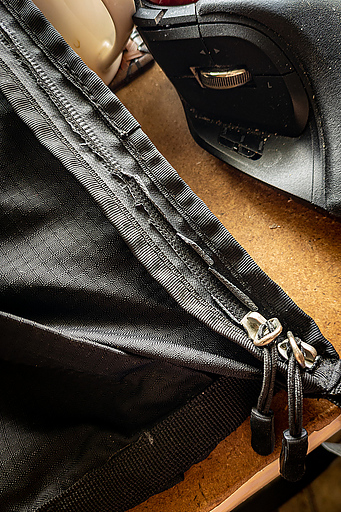

06 月 10日 ( 金 )
サコッシュのファスナーが劣化している件
今朝いろんな物をサコッシュに放り込んでいるときに、サコッシュのファスナーが写真のようになっていることに気がついた。

このファスナーは YKK のアクアガードという止水ファスナーという製品で、ファスナーの表面をみるとわかると思うのだけれど、ファスナー表面のコーティングが剥がれ落ちかけている。
なぜこのようなことになっているのかというと、YKK のアクアガードはファスナーの表面にポリウレタンフォームを超音波圧着という方法でくっつけているらしく、経年劣化で圧着部分が剥離してきているということみたいだ。
このサコッシュはもともと高い撥水性を謳っている製品なのだけど、このままだとファスナーからどんどん水が侵入してしまう。それは嬉しくはないので修理の方法を考えてみた。
まず考えられるのはファスナー自体の交換だ。
だがまてよ？とちょっと考える。
ファスナーを交換するということは、現在縫製されている部分の糸を全部抜き、新たに止水ファスナーを購入して、それを新たに縫い付けることになる。
一見よさげなソリューションだがこれは良くない。新たに止水ファスナーを縫い付けるということは縫い目の穴が低く見積もって倍には増えるということだ。これだと増えた穴から水がどんどん染み込んできてしまう。
もっと楽にそして被害が少ないソリューションはないかと考えた。考えながらサコッシュのファスナー付近をいじくってみた。いじくっているうちにこのサコッシュは縫い目にシームテープが一切貼られていないことに気がついた。
これはつまりどういうことかというと、このサコッシュはある程度の撥水性がある生地で作られているがもともと縫い目からの浸水については一切考慮されていないということだ。つまり止水ファスナーを使ってはいたものの、止水ファスナーを使う意味は機能上あんまりなかった、ってことだ。
そのことに気がつくとたちまち修理の意欲が消え失せた。もともとあまり水を防ぐ機能はなかったことを勘案すると止水ファスナーを交換することや、他のソリューションを導入する意味も強いとは言えない。縫い目から浸水する水の量とファスナーから浸水する量、しかもどちらも可能性だ、を考えると劇的に増えるわけではないと思える。
満足の行く防水能力を達成しようと思うと、縫製を含めた設計からやり直さないといけない。わずか 2、3 千円のサコッシュを大改造するのはあまりに時間と費用の無駄だ。
そんなわけでこのサコッシュはファスナー部分を修理することなく、駄目になるまで普通のサコッシュとして使うことにした。まぁ普段雨のときは傘を差すのだから、暴風雨でもない限り問題なかろう。
- Category :
- 日記
- MYOG
- DIY
野帳用サコッシュ暫定版をつくった件
野帳用サコッシュができた。
紙製だけどちゃんと縫ってる。手縫いなので時間がかかった。縫い方は革を縫うときと同じ方法で縫ってるから過剰に丈夫なはず。ただし生地が紙だってこと以外は。
これをタイベックで作ろうかと思ってたりする。記事のタイトルに暫定版と入れてるのはそのためだ。
これを作ったのは以下のアイテムだけを入れるのに都合のいいサコッシュが欲しかったからだ。
- 測量野帳
- 鉛筆
- 消しゴム
- キャップ兼鉛筆削り
- スマホ
たくさん入ることを売りにしているサコッシュは石を投げれば当たるほどにそこらじゅうで大量に売られている。だが他の余計なものは入れたくはなかったし、余計なポケットや仕切りなどもないシンプルな構造のものが欲しかったのだ。あとファスナーも邪魔だった。
本来自作するつもりはまったくなくて、販売されているものがないか探していたのだけど、そのような物はどこをさがしても売ってなかった。ない以上自分で作るしかなかった。

たまたま ZOZO タウンから荷物が届いて、その袋がやたら丈夫そうなのでそれで作ることにした。最初に ZOZO タウンの袋をばらして、料理に使うタコ糸で革細工の要領で縫製した。そのためかなり丈夫な縫製になっている。
肩紐は家にあったパラコードを利用した。細い穴を開けて細い丸ゴムを輪になるように通し、リングを取り付け、そのリングにパラコードをもやい結びと自在結びで取り付けた。片方が自在結びなので長さの調整も簡単にできる。
ZOZO タウンの袋を縫って作ったが紙なので当然濡れによわいと思われる。肩紐を掛けてる丸ゴムから破れると思われるので、タイベックを入手したらタイベックで作り直すかもしれない。防水・撥水にするつもりはまったくないが、濡れると壊れるのはやはり避けたい。
ただタイベックで作り直すと、「防護服をばらして作りましたっ！！ʅ(´◔౪◔)ʃ」って感じの見た目になると思うので格好は良くないかも。
- Category :
- 日記
- MYOG
- DIY